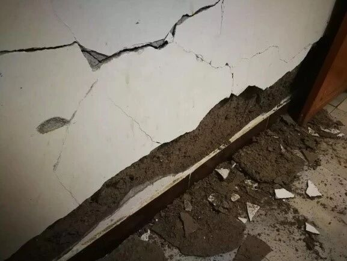

0721云南丽江4.9级地震RED-ACT结果分析与讨论
一、说明
由于基于实测地震动和城市抗震弹塑性分析的地震力破坏分析方法及其软件RED-ACT是一个新生事物，其合理性和准确性需要经过系统、深入的地震检验。我们也深知，虽然这个方法在原理上有一点特色，但是考虑到全国建筑的复杂性及地震的复杂性，我们一个小课题组肯定无法完成这么艰巨的工作。所以我们每次地震后发布分析结果，更多的目的是希望能吸引各方面专家，一起来开展这个领域的研究。我们仅仅是这个道路上一粒小小的铺路石而已。
以往震害对比结果
二、实际震害
从应急管理部获悉(新华网, 2019)，截至7月22日22时30分，当日在云南丽江市永胜县发生的4.9级地震暂无人员伤亡报告，震中地区有少量砖木、土木墙体损坏（图1）。据云南省地震局消息，震中附近村镇有农村太阳能设施破坏、农村砖木土木墙体破坏和局部土墙倒塌(新京报, 2019)。

（a）房屋出现裂缝1

（b）房屋出现裂缝2
图1 灾区实际震害(丽江读本, 2019)
三、RED-ACT地震速报系统分析
RED-ACT地震速报系统分析结果如图2、3所示（详见：RED-ACT: 云南丽江永胜4.9级地震破坏力分析），分析结果表明在震中较近的台站处建筑会发生轻微破坏，其中，典型台站53YPJ（震中距为18 km）不同结构类型建筑的破坏比例如表1所示，可见发生轻微破坏的建筑主要为未设防砌体结构和土木结构，与实际震害基本一致。

图2 不同台站地震记录破坏力分布图（建筑抗震承载力取均值）

图3 不同台站地震记录人员加速度感受分布图（建筑抗震承载力取均值）
表1 53YPJ台站处不同结构类型建筑破坏比例

四、参考资料
新华网. 2019. 应急管理部：云南丽江市永胜县4.9级地震暂无人员伤亡. http://www.xinhuanet.com/politics/2019-07/21/c_1124780262.htm (last accessed July 2019).
新京报. 2019. 云南永胜4.9级地震暂无人员伤亡报告. https://news.sina.com.cn/c/2019-07-21/doc-ihytcitm3625005.shtml?qq-pf-to=pcqq.group. (last accessed July 2019).
丽江读本. 2019. 永胜发生地震，暂无人员伤亡，部分房屋开裂，各部门星夜驰援. https://mp.weixin.qq.com/s/b2g9ZUuzL-XQl8Xb3vSArA. (last accessed July 2019).

本报告完成人员：程庆乐，赵鹏举，郑哲

程庆乐

赵鹏举

郑哲
---End---
相关研究
长按识别二维码，关注我们的科研动态